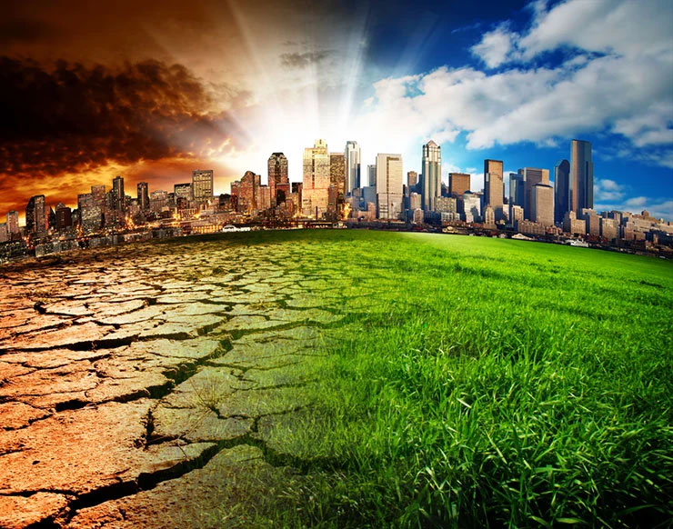

Overview
 One of the most immediate and severe crises that our planet grapples with today is that of climate change, posing as it does the ultimate threat of the utter annihilation of life. No longer a distant threat, climate change has already begun inflicting hazardous consequences to health, safe food and water resources, and economic opportunities. A 2020 report published by McKinsey and Company suggests that between 160 million to 200 million people in India are susceptible to a lethal heatwave that has a staggering 40% chance of occurring in the decade centered around 2030 in the absence of preventative measures. It thus becomes imminent for us to enact climate change initiatives that address the worst results of climate change.
Even though there are no definitive estimates of the financial resources needed to combat climate change, there is no doubt that current efforts are astoundingly deficient. The causes of this deficiency primarily lie in the unwillingness of governments to spend on preventative measures because climate change is not popularly perceived to be a pressing issue. The magnitude of how woeful this insufficiency is can be realized from a PRS India report that suggests that while India would require around 32 lakh crores just to shift to renewable sources of energy by 2030, the Ministry of Environment, Forests and Climate Change has been allocated a meager sum total of Rs 3,079 Crore in 2023-24.
Thus non-governmental organizations have had to step up to take on the mantle for this cause. However, the primary reason that hinders this relief work is insufficient funding. To that end, the Hyderabad Climate Fund realizes how a resource crunch paralyzes the indispensable work of NGOs and seeks to address this deprivation to enable NGOs to execute their charitable initiatives of working towards environmental protection and restoration.